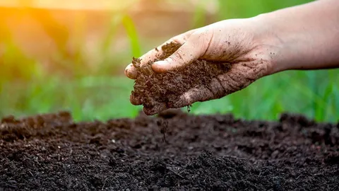

การดูแลดิน
5 แนวทางดูแลดินให้พร้อมสำหรับการเพาะปลูก
เริ่มจากรู้จักดินในแปลง เพิ่มอินทรียวัตถุ และดูแลการระบายน้ำ เพื่อวางแผนปลูกให้เหมาะกับพื้นที่
เริ่มดูแลดินจากอะไรได้บ้าง?
- สังเกตเนื้อดินและตรวจดิน ก่อนวางแผนใช้ปุ๋ย
- เติมปุ๋ยหมักที่ย่อยสลายสมบูรณ์ ตามความเหมาะสมของแปลง
- ใช้วัสดุคลุมดินเพื่อช่วยรักษาความชื้น
- ดูแลทางระบายน้ำไม่ให้แปลงมีน้ำขัง
- วางแผนหมุนเวียนพืชให้เหมาะกับพื้นที่
สภาพดินแต่ละแปลงต่างกัน ควรเลือกวิธีดูแลจากข้อมูลของพื้นที่จริง